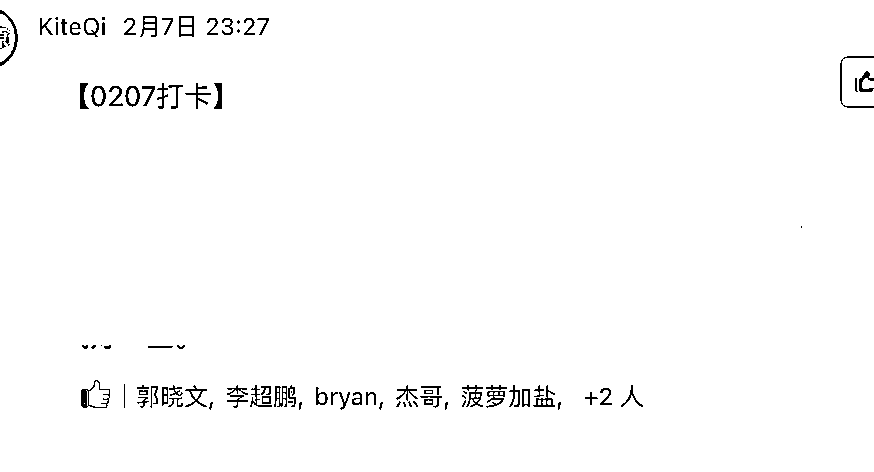

来源：https://y2mt3o47i3.feishu.cn/docx/MUfLdmUlTosj0NxPhlfcjRPHnff
跑通项目的圈友，想通过培训来放大收益的时候，你是不是经常遇到以下情况：
经常付费学习各种项目的圈友，是不是也有「明明老师的成绩不错，但自己怎么就学不会呢？」的疑问。
希望今天这篇帖子，既能帮想做训练营的圈友，做出高交付质量的训练营。
也能帮需要付费参与培训，跨出搞钱第一步的圈友，更清晰的认识到自己需要什么。
话不多说，进入正题：
《操作手册：如何从零到一打造一个高交付质量的训练营》
大家好呀，我是郭晓文。
先用@亦仁 说的方式，做个自我介绍吧。
这是我在生财的精华贴：
https://t.zsxq.com/03UbAyJAE【如何利用生财有术，抓住视频号带货的红利】
https://t.zsxq.com/fU3F2jU 《抖音引流Tips合集：鱼钩思维+企业号专属引流方式+常见误区》
https://t.zsxq.com/niQ7iIe【红包封面售卖】一周时间，搭建一个自裂变的赚钱系统
https://t.zsxq.com/RRrfqJE 【操作手册】公众号1个多月时间做到几乎篇篇5w+，进阶版「manchuan」玩法
https://t.zsxq.com/uZnyr7I 抖音月均播放量4个亿的短视频创作心法
https://t.zsxq.com/Uzv3Nrv 抖音小程序依旧可以稳定日入过千的玩法，实操手册
https://t.zsxq.com/b2FuNnq 茶叶垂直领域，抖音直播做到月营业额200w
用心的朋友会发现，我有特别多帖子都是具体某个项目的操作手册。
过去两年，我不仅自己跑通了许多个搞钱项目，也通过训练营的方式，带着很多圈友跨出了搞钱第一步。
今天，我就把我对训练营的理解，对新手如何入门项目的理解，以及打造训练营的保姆级教程，分享给大家。
内容分成两部分：
我的观点是：要做出高质量，落地性强的训练营，老师就不能脱离一线。
很多老师做培训之后，就会陷入一个困境：
结果，学员体验也差，自己项目也没做好。
这也是很多培训没办法长期做下去的原因之一。
这个困境的解法，就在：
「我要把学员教好，就得花更多时间精力」。
这句话上。
但：谁说要把学员教好，一定得花更多的时间精力？
很多人做培训，主打的噱头是：1v1。
但在我的训练营体系里，1v1是学员优先级最低的选项。
因为1v1：
简单来说，就是1v1是最吃力不讨好的事情。
那我们具体要怎么做呢：
操作手册是系统性的给出所有知识，是用来「查」的。
直播是更直观的介绍手册，是用来「理解」的。
百问百答是各种碎片化的问题，也是用来查的。
新手入门的问题，无非就是：
不知道做什么，就去看操作手册，听话照做
看完之后还不清楚、不理解怎么做，就去看直播录屏，加深理解。
遇到具体的问题了，就去群里提问，或者查询百问百答手册。
如果经过直播（包括录屏）+操作手册+百问百答还解决不了问题，再上1v1诊断。
按照以往经验来说，上述已经能解决大部分问题，1v1诊断的情况很少出现。
老师毕竟是从一个成熟的实操者的角度，来制作的操作手册和直播。
同时，老师的基础，和学员们的基础，也是不一样的。
这就导致了，学员会遇到很多老师没遇到过的困难。
这个时候，优秀学员的经验分享，就显得意义巨大了：
而对优秀学员来说：
对老师来说，优秀学员的分享，非常好的丰富了课程，也能很好的释放自己的时间精力。
这是三方共赢的行为。
之前我刚做训练营的时候，还会花时间去提醒那些不积极主动、掉队的学员。
后来，我发现这样的学员：
但，几乎没有人会因为我的提醒，而做出成绩。
因为，他们是在「被动」的做项目。
他们把做出成果的希望，完全寄托在别人身上。
而被动的做项目，几乎是不可能做出成果的。
反而是我努力帮积极主动的学员做出成果后，这些后进的学员看到后，会重拾积极性，归队一起冲。
所以，后来我：
做到：失败的唯一可能性，就是学员自己放弃。
相信我，当学员们开始意识到责任在自己身上的时候，他们的成材率会高特别特别多，作为开训练营的我们，也会轻松特别特别多。
很多时候，大家不是执行力不行，只是没有得到正确的引导。
设计一个训练营，分成两个步骤：
招生要解决的问题是：
许多人刚开始做培训，收学员都是直接用微信支付。
但学员少了还好，学员一多就容易乱。——哪些学员给我付费了？什么时候付费的？哪些学员给我推荐过新学员？哪些学员可以给优惠？
同时，个人账户收款太多，也很容易出现账户异常的问题，同时也会为后续的税务问题留下隐患。
这边提供两个我用过的平台：
大家学员多的话，买个平台收款，成本就不算高。
学员少的话，可以直接跳过这一步，看【交付】的板块。
千聊的优点是免费。
同时免费版就支持收款，分销等功能。
缺点是客服反应慢。除此之外，现在千聊的风控也比较严格。一旦你的课程属于下面这些类目，你的课程款项都有可能被冻结，分阶段返还。
星座玄学、医疗、金融财经、部分教育培训行业、非课程教学、线下履约、跨境电商、抖音培训等领域。
我自己在千聊上开过一期课程，款项被冻结了50%，剩下部分分阶段返还，预计得9个月才能全部提现。
小鹅通的缺点是需要付费。
标准版4800，专业版7999.
正常大家购买4800的版本就可以了。
价格的话，生财也有很多圈友在做小鹅通的代理商，都可以拿到适当的折扣。
具体区别看这个文档。
优点的话就很多了，可以上视频号直播，可以分销，可以收集学员信息表单，分销和裂变的工具也很多。
有需要的，购买后自行去研究即可。
按照上面心法的内容，我这边习惯的交付方式是：
接下来，我会一步步告诉大家怎么做。
操作手册，我往往是采用飞书文档来写。
飞书文档的好处是：
大家可以无脑选择用飞书文档来写操作手册。
那，操作手册要怎么写呢？
人接受陌生信息的能力是有限的。
所以，这一步要做到两个点：
作为学员，相信大家都有被一堆录播视频，一堆文档砸晕的经历吧？
大多数人得到海量的信息，第一反应是兴奋，第二反应是绝望。
“我该从哪看起？”
“哪些是重点？”
“我看到哪里的时候可以开始做？”
所以，我们做操作手册之前，首先要学会拆分。
我们要梳理一下：
然后，分阶段放出这些信息。
拿我之前做的情感号训练营的课程设计举例。
做成情感号引流项目，需要：
所以，当时这个训练营的第一节课，就只讲：怎么搭建一个情感类公众号。
然后，留一周的时间，给大家去执行。
第二节课，就只讲：怎么制作可以获取流量的视频。
然后留一周的时间，给大家去执行。
第三节课：就只讲：抖音运营的知识
然后，留一周的时间，给大家去执行。
第四节课，就只讲：变现的路径
然后，留一周的时间，给大家去执行。
每一周有一个固定的主题，大家就围绕着这一个主题去执行，去讨论。
做成一个项目，很难。
但把项目分解清楚，让大家一块，一块执行清楚了，难度就会下降很多。
除了一些初心就是割韭菜的人之外，我相信大部分做付费课程的人，都是热爱分享的。
但我们这种热爱分享的人，大多有个毛病：恨不得把自己知道的全部分享出来。
但问题是：学员接受不了那么多信息。
给的信息太多，只会让学员脑子里一团浆糊，反而提高了学习的门槛。
所以，要做课程，我们还必须懂一个概念——最少必要信息。
什么是最少必要信息呢？
就是学员完成一件事情，只需要掌握哪些信息。
举个例子，前阶段我教大家怎么做视频号带货。
我只需要：
在这个阶段，我不需要把我知道的混剪、原创等方法也告诉大家。
我不需要把考古加&精选联盟的其他功能（看流量构成、看近期飙升的新玩家等）告诉大家。
因为，大家要完成闭环，只需要了解这些信息。
更多的信息，是大家在需要进阶的阶段，在去做其他项目的时候，才需要了解的信息，属于「有用」但「不必要」的信息。
正如学吉他，最快的方式不是先从乐理，看谱开始学，而是先学会弹小星星。
入门项目也是一样的逻辑，先掌握，也只需要掌握「最少必要信息」。
大家可以在操作手册给出后，问一问自己：
「文档里面哪些信息，删掉之后，也不影响学员完成这个阶段的动作？」
然后，删掉这些内容。
有了文档后，我们还需要直播一次。
直播内容：
不得不再次感慨，飞书太强大了。
大家直播授课，也是可以直接采用飞书直播：
我们采用的是飞书群打卡。
打卡的核心点：
为了降低学员打卡的门槛，我还会设定要成打卡模板。
大家可以参考一下：
1.今日发布视频数量
2.昨日发布视频总播放量
3. 昨日GMV:
4.明日发布计划：
5. 遇到问题以及如何解决
6. 疑问：
在飞书群，大家还可以对彼此的打卡信息点赞，互动。

这个板块，则放在微信群。
因为前面我们已经把每周的内容统一，所以，大家的问题和讨论的信息，都会比较集中。
相比各种信息混杂，还需要付出比较高的筛选信息成本的群，学员自然会更活跃。
百问百答文档，里面的问题源于：
我们可以把这几个地方的问题和答案，定期整理进百问百答文档里面。
这样可以避免反复回答一些重复的问题。
注意点：
具体可以参考
副业培训行业其实还是比较乱的。
但我相信很多没做好交付的人，初心并非割韭菜。
毕竟，谁不想自己的名声好呢？
只是，很多人懂做项目，但不懂教项目，更没有一个可参考的高效的培训体系。
希望，我的这个文档，多少能帮到大家。
能让已经成功跑出项目的人，能通过培训，复制自己的成功，拓宽收入来源。
能让更多想做项目的普通人，能有学得会、靠谱的副业培训项目，开启一个一个新世界的大门。
我是郭晓文，最懂新手的男人。
欢迎交流。微信：gxw_career